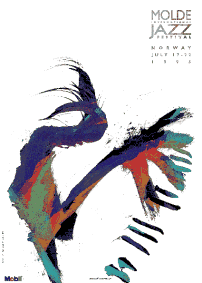

Årets jazz-plakat er et samarbeid mellom Dagbladets tegner/kunstner Arne Nøst og I&M Ramstad. Sollid AS. Utgangspunktet var en sort penseltegning. Denne ble scannet inn av vår grafiske designer og bearbeidet digitalt.